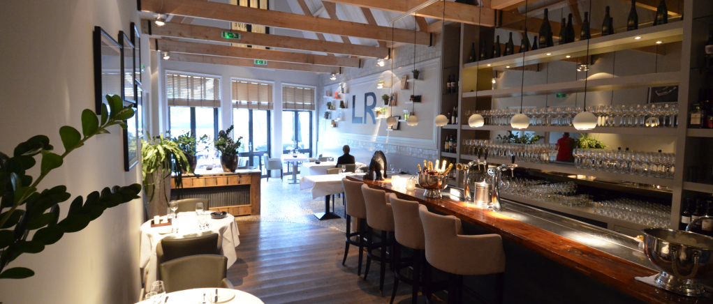

There are many good restaurants in Hoorn but wich one are actualy good and are worth a visit?
-
Restaurant Cheung Cuisine
Madame Cheung Asian Cuisine has a modern look at the traditional asian resipies with a stylefull interior the restaurant puts alot of care in its fresh ingrienants and good taste. Speciality: Sushi and other asian food. Location: In the center of Hoorn
Go to Website -
Restaurant de Hoofdtoren
With a focus on fishfood this restaurant is placed in the historic tower build in the 16th centuary. This resteraunt has a unique dining experience with a view on the harbor. The atmosphere is romantic and rustic, perfect for a special occasion. Speciality: Fresh fish, crustaceans and shellfish. Location: Directly on het Ijsselmeer.
Go to Website -

Hendrinkje Stoffels
This restaurant has a cozy, living room-like atmosphere and offers a wide range of dishes with a modern twist. The menu changes regularly and a lot of local and seasonal products are used. Specialty: Traditional dishes with a focus on local ingredients. Location: Cozyly located in the old town of Hoorn.
Go to Website